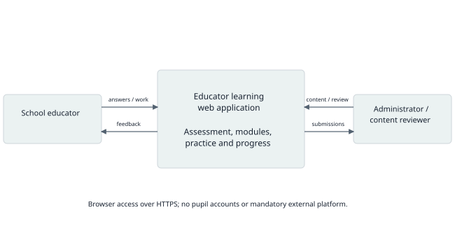
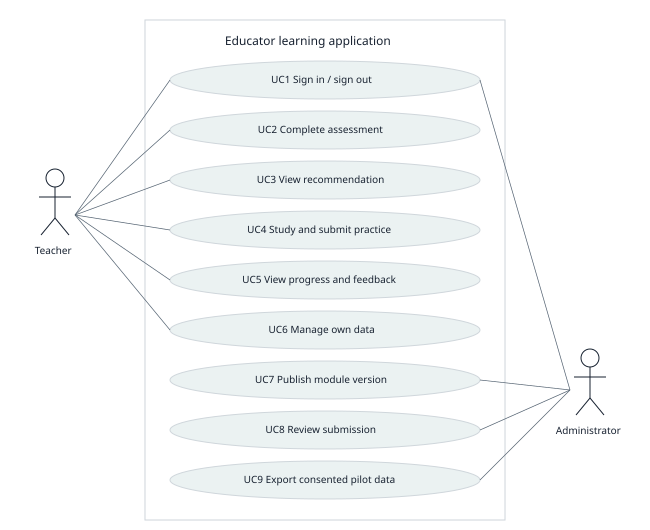
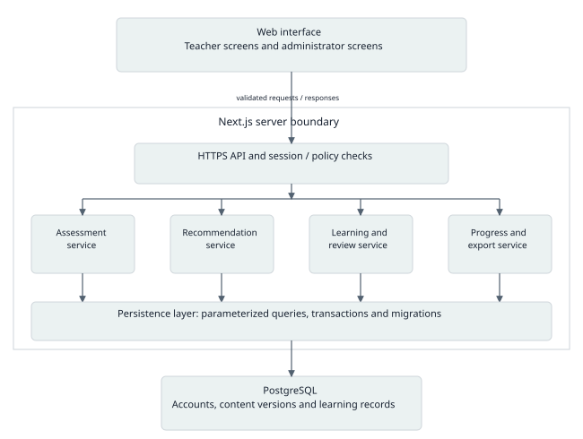
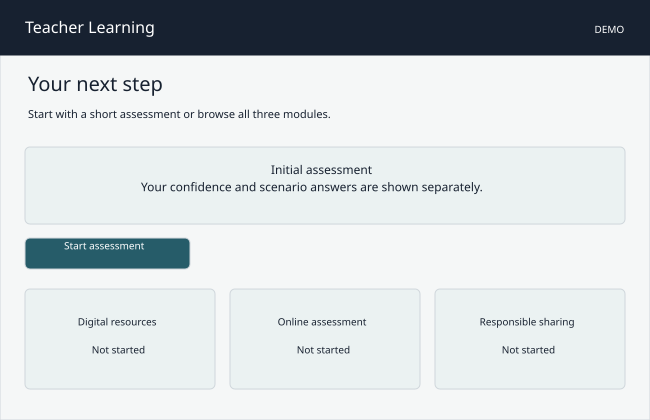
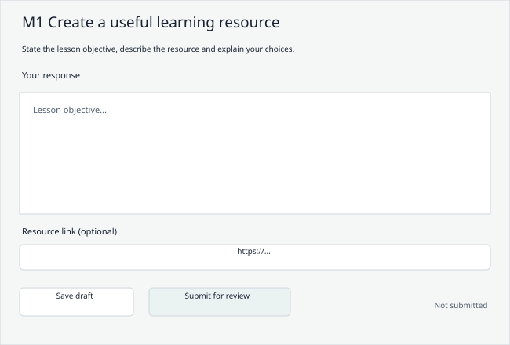

First submission report · Ayan Abilbek · SE-2401
Supervisor: Aliya Katyetova · 23 October 2026
Review draft. Interviews and supervisor feedback are missing. No submission is claimed.
This report presents the analysis and proposed design for an individual diploma project. It is a review draft revised on 23 October 2026 for the first submission due on 24 October 2026 at 18:00, Astana time. It covers all eleven required components. The design sections are developed, but the package is not yet a complete submission: discussions with users, substantive supervisor feedback, recipient access and the submission receipt remain outstanding.
The project title and initial scope follow the final Justification dated 15 October 2026. In an email dated 16 October, Aliya Katyetova confirmed that she had completed, signed and sent it to the School of Software Engineering. This existing document is preserved without revision. The locally available PDF has an empty visible signature line and no PDF signature field; the email is the available confirmation of signing and dispatch. This distinction does not call for rewriting the justification.
Evidence labels used in this report have a narrow meaning. Confirmed means supported by a source document, correspondence or recorded technical check. Proposed means a design or planning decision prepared for review. Missing means the required evidence has not been supplied or produced. No teacher interviews, learning gains, application test results or supervisor approvals are asserted.
| Component | Current status | Evidence or remaining work |
|---|---|---|
| 1 Proposal | Prepared for review | Based on the final Justification; local needs still need validation. |
| 2 Relevance evidence | Missing primary evidence | User confirmed that discussion records do not exist. Protocol provided. |
| 3 Literature review | Prepared | 12 core sources, including 8 scientific publications; access limitations stated. |
| 4 Systems comparison | Prepared | 3 systems compared on 8 criteria using official documentation. |
| 5 Technology comparison | Prepared | 3 decisions with 3 alternatives each; choices are proposed. |
| 6 Requirements | Prepared for validation | Numbered requirements, priorities and acceptance criteria. |
| 7 Architecture | Prepared | Context, use case and component diagrams with editable sources. |
| 8 UX | Prepared | Local interactive prototype with demonstration data. No user validation. |
| 9 Verification plan | Prepared | Functional tests, outcome measures, baseline and measurement conditions. |
| 10 Project management | Partial | GitHub and YouTrack created; milestones and risks prepared. Recipient access and supervisor review remain pending. |
| 11 Supervisor feedback | Missing | Signed justification is not a review of these new deliverables. |
The local requirements DOCX specifies the eleven components and repository workflow. The School email forwarded on 16 October additionally requires a repository link, a YouTrack or similar project link, a PDF of board/task screenshots and a separate consolidated report. The supervisor also explicitly confirmed that GitHub is acceptable. University Microsoft authentication was completed and pages 1–2 of the live form were checked. The form explicitly requires a prob-period-1 tag URL, task IDs and commit or pull-request links for individual contributions. The DOCX uses a different tag name, pre-defense-1; both should point to the same final commit. Pages 3–5 and upload limits have not yet been checked because the required final tag is not ready. The authoritative form is https://forms.cloud.microsoft/r/Yy6AXT5pe3.
Student: Ayan Abilbek, Software Engineering, group SE-2401. Supervisor: Aliya Katyetova. This is an individual project. I am responsible for requirements, architecture, implementation, tests, evaluation and the thesis. The supervisor reviews the academic scope, competence mapping and evaluation approach. Her participation in reviews is not treated as implementation work.
A teacher preparing a lesson may need to choose a reusable image, make a short online quiz and share the resulting resources safely. Learning how to operate a tool is only part of that work: the teacher also has to decide whether the resource fits the lesson and whether it can be used responsibly. The project addresses this sequence through a small web application that connects an initial assessment to focused learning and practical tasks.
The intended users are school educators who want to improve selected digital teaching skills. An administrator maintains learning content and reviews practical submissions. Pupils do not need accounts, and their personal information is not needed for the pilot. The final Justification records a personal connection to school teaching through help with lesson materials. That experience motivates the project, but it does not establish the needs of a wider teacher population. Those needs remain to be checked in 3-5 discussions.
The aim is to design, implement and evaluate a web application that helps school educators identify a limited set of learning needs, complete relevant learning activities and monitor their practice. The research question is: how can a short assessment, explainable recommendations and classroom-related practice be combined into a usable learning workflow for school educators? A later pilot will examine usability and preliminary changes in practical task performance. It will not establish national competence levels or causal effectiveness from a small convenience sample.
| Objective | Deliverable | Evidence of completion |
|---|---|---|
| O1 Understand the problem | Discussion synthesis and competence map | 3-5 documented discussions or substantive client agreement; assumptions separated. |
| O2 Specify and design | Requirements, three diagrams and UX prototype | Traceable scenarios and reviewable acceptance criteria. |
| O3 Implement the core workflow | Teacher/admin accounts, assessment, 3 modules, tasks and progress | End-to-end demonstration and automated integration checks. |
| O4 Evaluate usability and learning signals | Pilot protocol, anonymised observations and task scoring | Actual paired records, denominators and limitations reported. |
| O5 Maintain reproducible work | Repository, tracker and release documentation | Tasks linked to changes; selected supervisor reviews; tagged submission. |
The initial version contains exactly three learning modules: creating digital learning resources; designing online assessment; and managing educational resources responsibly. A teacher completes an initial assessment, sees a suggested starting module and the reason for that suggestion, studies a short lesson, submits a practical response and checks progress. The administrator publishes versioned content and reviews submissions using a simple rubric. A teacher may choose another module instead of following a recommendation.
The proposed contribution is this small, traceable workflow and its evaluation with school educators. The project does not claim to invent digital competence assessment or to outperform established training platforms. It excludes an AI tutor, automatic grading of open-ended teaching quality, a course marketplace, live classes, school information system integrations and formal professional certification. These exclusions keep the individual project manageable.
| Module | Proposed activity | DigCompEdu reference and evidence |
|---|---|---|
| M1 Digital resources | Prepare a one-page learning resource for a stated lesson objective. Explain the choice of source, adaptation and accessibility. | 2.1 Selecting; 2.2 Creating/modifying; 5.1 Accessibility/inclusion. Evidence: resource excerpt and rationale. |
| M2 Online assessment | Design a five-question formative quiz and explain how feedback would change the next lesson. Use fictitious responses. | 4.1 Assessment strategies; 4.2 Analysing evidence; 4.3 Feedback/planning. Evidence: quiz specification and feedback decision. |
| M3 Responsible resource management | Choose a suitable sharing setting, attribute a reusable resource and remove personal data from a fictional example. | 2.3 Managing/protecting/sharing resources; 6.3 Digital content creation. Evidence: explanation of permission, attribution and privacy choices. |
The mapping uses DigCompEdu as a design reference [R1]. It covers selected competences only; it is not an implementation of all 22 competences or a validated A1-C2 classification. The precise tasks and language must be checked with educators and the supervisor before recruitment and assessment.
Primary user evidence is not yet available. The student confirmed that there are no discussion records. No participant counts, quotations, interview themes or local survey results are reported here. Literature supports the general problem, while the final Justification supplies the intended scope; neither replaces discussions with the intended users.
| Item | What is known | What remains unverified |
|---|---|---|
| Project context | The final Justification identifies school educators and three learning areas. | Whether these three areas are priorities for the teachers who will use the prototype. |
| Personal observation | The Justification records experience helping with lesson materials. | Frequency, severity and distribution of difficulties across educators. |
| General research | Reviewed studies discuss digital competence, training and assessment. | Transferability to the selected school context in Kazakhstan. |
| Proposed learning format | Short modules and practical tasks are planned. | Preferred language, available time, device access and acceptable feedback format. |
Recruit 3-5 adult school educators with some variation in subject, teaching experience and confidence with technology. A small convenience sample is suitable for discovering concrete requirements, not estimating prevalence. If a family member participates, record that relationship and recruit other educators too. Each discussion should last around 20 minutes. Participation is voluntary; the educator may skip questions. Record audio only with explicit permission. Use participant codes in shared materials and keep identities outside the repository.
| Step | Question or activity | What to record |
|---|---|---|
| 1 Context | What subject and age group do you teach? Which devices and tools do you normally use? | Role, device and tool context; no unnecessary personal details. |
| 2 Recent task | Tell me about the last lesson resource or online quiz you prepared. | Concrete sequence, time-consuming steps and actual obstacles. |
| 3 Current workaround | What did you do when you got stuck? Which help was useful? | Existing alternatives, workarounds and dissatisfaction. |
| 4 Priorities | Which of the three proposed learning areas would be useful, and which would not? Why? | Supporting and contradicting evidence; participant wording. |
| 5 Prototype walkthrough | Show how you would find a module, submit a task and view feedback. | Observed behaviour, hesitation and assistance; distinguish this from opinions. |
| 6 Constraints | What language, session length and device would make this usable? What would you avoid sharing? | Requirements for language, time, access and privacy. |
| 7 Confirmation | Summarise the main points and ask whether the interpretation is accurate. | Corrections and permission to use anonymised notes. |
For each observation, retain a source code, a short anonymised excerpt or faithful paraphrase, an interpretation and a linked requirement. Record contradictory accounts instead of forcing agreement. A requirement based on one educator should be marked as such. Counts such as "2 of 4 participants" may describe this sample, but must not be presented as percentages of all teachers. Update module priorities, terminology and accessibility assumptions after synthesis.
| Assumption | Risk if wrong | Validation action |
|---|---|---|
| A1 Teachers will use short self-paced sessions. | The proposed lesson length may not fit their routine. | Ask about a recent learning episode and available time. |
| A2 Three selected topics are useful. | The application may solve a low-priority problem. | Have participants rank topics and name missing tasks. |
| A3 Teachers can access a browser and stable connection. | The workflow may exclude intended users. | Record device/network constraints before implementation. |
| A4 Russian content is an acceptable initial option. | Language could obstruct participation. | Confirm preferred language; keep interface strings externalised. |
| A5 An administrator can review practical tasks. | Feedback may be delayed or inconsistent. | Agree reviewer availability and calibrate the rubric. |
This is a focused critical review for the first project submission, not a systematic review. Searches conducted on 22 October 2026 used combinations of "teacher digital competence", "DigCompEdu", "in-service teachers", "assessment" and "professional development". Publisher pages, original research reports and official framework documentation were checked. Eight scientific publications are retained, seven published in 2021-2025, together with four framework/standard sources. Falloon (2020) is retained for its conceptual treatment of professional and ethical competence. No fabricated screening counts or database access are claimed.
The review prioritises studies of school educators, instruments and training design. The higher-education review [R6] is retained as a methodological comparison, with its different population made explicit. For [R5] and [R8], the available publisher abstract/highlights support only a bounded account; no inaccessible methods or effect sizes are attributed to them. Official technical and product documentation is listed separately and does not count toward the eight scientific publications.
DigCompEdu provides a common structure for linking teaching activities to digital competence [R1]. Its value for this project is traceability: a module can state the competence it addresses and the task through which a teacher practises it. UNESCO likewise treats its framework as something to adapt to a particular setting [R2]. Neither framework establishes the needs of the teachers recruited for this project.
Falloon argues for a broader understanding that includes ethical and professional capabilities [R3]. Heine, Krepf and König show that even "digital resources" is used inconsistently across research [R7]. These points lead to a concrete design choice: M1 must ask why a resource is appropriate and reusable, rather than simply whether a teacher can upload a file. The rubric will state the intended lesson objective and the evidence required.
Lucas and colleagues validated a DigCompEdu-based self-assessment with 1,071 in-service teachers and examined personal and contextual factors [R4]. Tzafilkou and colleagues developed a 20-item instrument using responses from 845 primary and secondary teachers in Greece [R9]. These studies show how structured instruments can examine several dimensions. Their samples and validation procedures do not transfer automatically to a new, shorter questionnaire.
Basilotta-Gómez-Pablos and colleagues found a strong emphasis on self-assessment in the higher-education literature [R6]. Claro and colleagues identify varying operational definitions and limited comparability in quantitative research on school teachers [R8]. For this application, confidence responses will therefore be stored separately from scored scenario questions and practical task rubrics. A single combined "competence percentage" would conceal those differences. The prototype will not award a DigCompEdu proficiency level.
Cabero-Almenara and colleagues designed and validated the structure, content and tasks of a DigCompEdu-based t-MOOC for non-university teachers [R5]. This is relevant to the organisation of modules, but validation of a training proposal does not prove that this application improves learning. Gallego Joya and colleagues review training programmes and note both reported improvements and gaps in alignment with current needs [R10]. Together, these sources support testing a complete learning sequence and checking its fit with local educators.
The proposed sequence is: identify a learning need, explain the recommendation, provide a short lesson, complete a classroom-related task and inspect feedback. The learning evaluation will use parallel practical tasks before and after a module. Completion clicks are a usage measure; they are not evidence of acquired skill. The pilot must report assistance, missing responses and participant selection alongside any change in scores.
DigComp 3.0, published in 2025, adds more granular learning outcomes and integrates AI across the general citizen framework [R11]. It is useful for checking whether resource-management examples ignore current digital practices. It does not replace the educator-specific scope approved in the Justification, and it does not require adding an AI product feature. WCAG 2.2 [R12] supplies testable accessibility expectations for the interface, including keyboard use, focus visibility and readable controls. These become planned checks, not a claim of certified conformance.
| ID | Publication | Approach and contribution | Use and limitation |
|---|---|---|---|
| R1 | Redecker (2017), DigCompEdu | Framework for educators; six areas and 22 competences. | Use selected descriptors for the module map. A reference framework is not local needs evidence. |
| R2 | UNESCO (2018), ICT CFT v3 | Framework intended for contextualised teacher development. | Validate local conditions and reviewer capacity. Does not validate this web application. |
| R3 | Falloon (2020), TDC framework | Conceptual article broadening technical skills toward professional and ethical competence. | Include rationale, responsible sharing and reflection. Conceptual basis, not an intervention effect estimate. |
| R4 | Lucas et al. (2021) | Empirical study; 1,071 in-service teachers; validated self-assessment and factor analysis. | Separate confidence from observed performance. Associations do not establish causal training effects. |
| R5 | Cabero-Almenara et al. (2021) | Design/validation of a task-oriented MOOC for non-university teachers; publisher abstract inspected. | Structure modules around tasks. Do not infer learning gains from design validation. |
| R6 | Basilotta-Gómez-Pablos et al. (2022) | Systematic review of 56 higher-education studies; self-assessment prominent. | Triangulate measures. University staff differ from the target school population. |
| R7 | Heine, Krepf and König (2023) | Review of digital-resource definitions in 23 articles. | Define the resource and pedagogical purpose explicitly. Terminology review is not a usability study. |
| R8 | Claro et al. (2024) | Review of quantitative school-teacher studies from 2016-2021; publisher abstract/highlights inspected. | State what each metric measures; avoid comparing unlike instruments or populations. |
| R9 | Tzafilkou et al. (2023) | Empirical instrument study; 845 Greek teachers, 20 items and six components. | Include professional and pedagogical scenarios. Translation and shortening require fresh validation. |
| R10 | Gallego Joya et al. (2025) | Review of training programmes in studies published in 2017-2023. | Link conceptual learning, practical tasks and attitudes; investigate local fit rather than assuming transfer. |
| R11 | Cosgrove and Cachia (2025), DigComp 3.0 | Updated citizen competence framework; technology-neutral learning outcomes. | Check contemporary resource examples. Keep educator mapping grounded in R1. |
| R12 | W3C (2024), WCAG 2.2 | Technical accessibility recommendation, not an empirical study. | Derive interface checks and document failures. Automated checks alone cannot establish full conformance. |
The evidence supports a bounded engineering question: can a small application make the path from assessment to relevant practice clear and usable for a specific group of school educators? It does not support a claim that no comparable platform exists. The project will contribute an implemented workflow, transparent decision rules, traceable content and a cautious pilot evaluation. The local user discussions remain essential because the reviewed studies do not establish demand in the intended school setting.
Three relevant systems are compared using eight consistent criteria. The comparison uses official public documentation inspected on 22 October 2026; no paid accounts, hands-on usability scores or comparative experiments are claimed. "Not established" means that the inspected documentation did not establish the feature. It must not be read as proof that the feature is absent. Features and terms can change.
| Criterion | SELFIE for TEACHERS [S1] | Google for Education [S2-S3] | Microsoft Learn Educator Center [S4-S5] |
|---|---|---|---|
| Primary purpose | Reflection on digital teaching competence. | Training and certification in Google education tools. | Educator training and professional development. |
| Audience | Early years, primary and secondary teachers. | Educators and education administrators. | Educators; catalogue supports role filters. |
| Competence reference | Six teaching-related areas; reflection and feedback. | Product-oriented skills; selected standards-aligned offers. | Product and topic learning paths; full DigCompEdu map not established. |
| Initial assessment | Reflective questions and personalised report. | Certification exams documented; diagnostic-to-module matching not established. | Knowledge checks/modules documented; universal entry diagnosis not established. |
| Learning content | Improvement suggestions; a full practice course is not established on the inspected page. | Self-paced courses and practical preparation resources. | Interactive lessons, modules and learning paths. |
| Practical evidence | Self-reflection output; reviewed teaching artefact workflow not established. | Certification and task preparation; grading of this project’s local rubric not established. | Training activities; grading of this project’s local rubric not established. |
| Progress and output | Personal report, participation certificate/badge. | Educator certification and badge. | Training history, achievements and transcript sharing. |
| Account and ecosystem | EU Login; optional sharing of personal report. | Google education ecosystem. | Microsoft Learn profile; educator/product catalogue. |
SELFIE offers a strong reference for reflective feedback, while the Google and Microsoft services already provide extensive educator learning material. A claim that teachers lack any training platform would be inaccurate. The proposed application instead tests a narrow sequence across three locally chosen topics, with explicit recommendation reasons and practical evidence visible beside progress. Whether that sequence is more useful than a simple resource list is an evaluation question, not a conclusion from this table.
The pilot baseline will be a curated static resource page covering the same three topics and comparable content. It will be labelled as a project baseline, not as a reproduction of any commercial platform. The comparison isolates navigation and guidance more clearly than comparing different content libraries, although a small pilot will still have strong order and familiarity effects.
The final Justification proposes Next.js, React, TypeScript and PostgreSQL. The following comparisons examine that choice against the project needs. They are design judgements, not performance benchmarks. Dependency versions and the deployment provider will be pinned when implementation begins. No cloud subscription or hosting cost is assumed.
| Option | Fit for this project | Cost or limitation |
|---|---|---|
| Next.js with TypeScript [T1] | UI and server route handlers in one project; shared language; sufficient for accounts, content and assessment. | Server/client boundaries and authorisation need care. Framework conventions do not provide secure access automatically. |
| Django [T2] | Mature model-driven backend and built-in administration; suitable for content and relational data. | A separate rich React client would add a second language and integration work; server templates remain viable. |
| NestJS plus React [T3] | Explicit modules, controllers and services; clear backend boundaries. | Separate frontend/backend setup and deployment add work for a small individual project. |
Proposed decision: keep Next.js as a modular monolith. Business rules live in server-side services rather than UI components. This preserves a small deployment surface while leaving assessment, recommendations and progress independently testable. Reconsider a separate backend if the scope grows beyond the approved workflow.
| Option | Fit for this project | Cost or limitation |
|---|---|---|
| PostgreSQL [T4] | Foreign keys and transactions suit attempts, responses, published module versions and progress updates. | Requires a running database, migrations and a tested backup process. |
| SQLite [T5] | Simple local database; useful for small standalone tools and development experiments. | A shared hosted application with concurrent writes and remote storage needs a considered deployment model. |
| MongoDB [T6] | Flexible documents can represent variable learning content. | Relational invariants and cross-entity reporting would need deliberate modelling; flexibility is not itself a requirement. |
Proposed decision: use PostgreSQL for the shared application. Publish content versions and retain the version identifier with each assessment attempt. Save an attempt and its responses in one transaction so a failed request cannot leave a completed attempt without the corresponding data. Content documents may use a bounded JSON field, but ownership and version relationships remain explicit.
| Option | Fit for this project | Cost or limitation |
|---|---|---|
| HTTPS JSON endpoints | A small explicit API maps well to attempts, tasks, reviews and progress. Easy to exercise in integration tests. | Endpoint validation, consistent errors and server-side access checks must be implemented. |
| GraphQL [T7] | Useful when several clients need varied data shapes from a shared schema. | Schema/resolver permissions and extra tooling bring limited benefit for one small web client. |
| Next.js Server Actions [T8] | Convenient for form mutations inside the same application. | Tighter framework coupling; actions still need input validation and authorisation. |
Proposed decision: use HTTPS JSON route handlers for the core workflows and direct server-side queries for read-only server rendering where appropriate. This keeps the acceptance tests independent of page structure. No microservice network, event broker or real-time channel is needed for the first version.
The approved scope calls for rule-based recommendations. Machine learning would require suitable training data and a defensible evaluation that are not currently available. A versioned rule sorts modules by diagnostic need and presents the reason to the teacher. The rules are simple enough to inspect, test at boundary values and change after feedback. They do not claim to predict an individual’s ability.
The following requirements describe the intended application, not completed functionality. Must denotes essential scope, Should denotes useful scope that can be deferred. All requirements are proposed from the final Justification and the reviewed sources; none is labelled as validated by interviews. Teacher needs will be linked using evidence codes after the discussions. Administrator accounts belong to a designated content reviewer; supervisor and committee access to project materials does not automatically grant access to teachers’ personal records.
| ID / priority | Requirement | Acceptance criteria |
|---|---|---|
| FR01 / Must | Account access and roles | A registered teacher can sign in/out. Unauthenticated requests receive 401 and a teacher cannot call administrator operations (403). Passwords are never stored in plaintext. |
| FR02 / Must | Initial assessment | A teacher completes 9 original scenario questions, 3 per module, plus separate confidence prompts. Missing mandatory answers prevent submission and receive a field-level error. |
| FR03 / Must | Scores and history | The server stores answers, score, timestamp and content/rule versions. Confidence is displayed separately. A repeated request with the same idempotency key creates one attempt. |
| FR04 / Must | Explainable recommendation | The lowest-scoring incomplete module is recommended; a tied score uses M1, M2, M3 order. The page names the topic and score behind the choice. With no assessment, show the catalogue without a personalised claim. |
| FR05 / Must | Three learning modules | Each published module contains an objective, competence reference, lesson, example, practice brief and completion rules. Unpublished versions are not visible to teachers. |
| FR06 / Must | Practical submission | A teacher saves a text response and an optional HTTPS resource link, then submits. Empty text is rejected; an invalid link does not silently disappear. Drafts remain editable. |
| FR07 / Must | Rubric feedback | An administrator reviews a submitted task using four 0-2 criteria, gives a comment and chooses accepted or revision needed. A teacher can see only their own feedback. |
| FR08 / Must | Progress | The dashboard distinguishes not started, in progress, awaiting review, revision needed and completed. A module completes only after the required lesson steps and an accepted practice submission. |
| FR09 / Must | Content administration | An administrator creates/edits drafts and publishes a new version. Existing attempts retain their original question and rubric version; publish does not rewrite history. |
| FR10 / Must | Data control | A teacher can obtain their own assessment/submission history and request account deletion. The administrator removes associated personal records under the agreed retention process; deletion is logged without retaining the content. |
| FR11 / Should | Resume and recover | A saved draft can be reopened after sign-out. A failed save shows an error, preserves visible text and offers retry without showing a false success. |
| FR12 / Should | Pilot export | An authorised administrator exports pseudonymised, consented pilot records with task/form version, scores, condition and timestamps. Non-consenting accounts are excluded. |
| ID / priority | Attribute | Acceptance criteria |
|---|---|---|
| NFR01 / Must | Access control | Integration tests using two teachers and an admin show zero successful cross-user reads/writes. Authorisation is checked on the server for every protected resource. |
| NFR02 / Must | Accessibility | Core flows work by keyboard; labels and visible focus exist; errors are associated with fields. Test selected WCAG 2.2 A/AA criteria [R12]; record failures rather than claiming full conformance. |
| NFR03 / Must | Responsive layout | Core screens at 360, 768 and 1280 CSS pixels have readable controls and no horizontal page scrolling; test keyboard and zoom behaviour. |
| NFR04 / Should | Performance target | On the recorded staging hardware, seed 100 teacher accounts and run 20 concurrent sessions for 5 minutes. Target p95 API response under 1 second and under 1% unexpected failures. Report actual results and exclusions. |
| NFR05 / Must | Data integrity | A failed transaction does not produce a completed attempt or duplicated progress. Concurrent/retried submission tests preserve one record per idempotency key. |
| NFR06 / Must | Reproducibility | A fresh checkout can be configured with example variables, migrated, seeded with synthetic data and tested using the documented commands; no private data or credentials in Git. |
| NFR07 / Must | Privacy | Collect only account and learning data needed for the workflow. Do not collect pupil records; keep contact keys separate from research exports. Agree retention before pilot consent. |
| NFR08 / Should | Recovery | Restore a staging backup into an isolated database and verify seeded counts and relationships. Target restoration within 60 minutes; record actual elapsed time. |
The initial diagnostic uses three original scenario questions for each module, scored 0 or 1. Module score = correct answers / 3. The recommended module is the incomplete module with the lowest score; equal scores follow the fixed order M1, M2, M3. A score below 2/3 is labelled "suggested starting point", not "low competence". Confidence prompts are not part of the numeric score. Teachers can override the order. If every module is completed, the page suggests review instead of inventing a new need. These thresholds are an initial product rule requiring review, not a validated psychometric boundary.
Completion has a separate meaning from improvement: completion records the required activities and an accepted practice submission, whereas improvement requires a comparison of practical performance over time. The application must not infer improvement from time spent, a confidence response or a completed lesson alone.
UC2-UC5 cover the teacher learning cycle. Preconditions: the teacher is authenticated and three module versions are published. Main flow: answer the diagnostic; submit; read the recommendation; open a module; study; save and submit practice; receive feedback; inspect progress. Alternatives: skip personalisation and browse; resume a draft; correct an invalid link; retry a failed save; revise a returned submission. Postcondition: the saved status reflects the actual completed step, and the teacher can retrieve their own record.
The proposed architecture is a modular monolith: a Next.js application serves the interface and protected endpoints, while PostgreSQL stores accounts, versioned content and learning records. Business services sit behind the API boundary. The first version has no mandatory external learning-platform integration. An optional resource URL is stored as a link; the server does not fetch arbitrary user-supplied URLs. This avoids turning the submission feature into an unrestricted server-side URL fetcher.



| Component | Responsibility | Requirements |
|---|---|---|
| Web interface | Assessment forms, module pages, practice and progress; show save/error states. | FR02, FR05-FR08, FR11; NFR02-NFR03 |
| Auth and policy service | Establish session, role and resource ownership; deny access by default. | FR01, FR10; NFR01, NFR07 |
| Assessment service | Validate answers, compute score and save a versioned attempt atomically. | FR02-FR03; NFR05 |
| Recommendation service | Apply versioned deterministic rules; return module and explanation. | FR04 |
| Learning and review service | Published content, drafts, submissions, rubric reviews and state transitions. | FR05-FR07, FR09, FR11 |
| Progress and export service | Derive status from records; export own data or consented pilot data. | FR08, FR10, FR12 |
| Persistence layer | Parameterized queries, transactions, foreign keys and migrations. | NFR05-NFR08 |
| Entity | Key data | Relationship or invariant |
|---|---|---|
| User | id, email, password hash, role | One account owns its attempts and submissions. Role is server-controlled. |
| ModuleVersion | id, module key, version, status, objective, content | Published versions are immutable; create another version to revise content. |
| Question | id, module version, prompt, options, correct option | Server retains answer key; client receives only public question fields. |
| AssessmentAttempt / Response | user id, version, score, question id, selected answer | Responses belong to one attempt; question versions remain recoverable. |
| Recommendation | attempt id, module key, reason, rule version | Recommendation is reproducible from its linked attempt and rules. |
| Submission | user id, module version, text, optional URL, status | Only the owner edits drafts; submitted revisions retain a version. |
| Review | submission id, reviewer id, four rubric scores, comment | Reviewer must be an administrator; score values are integers 0-2. |
| Progress / Consent | user id, module key, step; consent version/time | Progress is derived from durable activity records; pilot export requires consent. |
A submitted assessment reaches an authenticated endpoint. The server validates question identifiers and answer counts, loads the matching version, computes the score, and writes the attempt and responses in a transaction. After commit, the recommendation service produces a reasoned next step. A network retry uses the same request key and returns the existing result. The client displays success only after server confirmation. The same ownership check applies when an existing record is requested by identifier.
Passwords will use a maintained authentication library and adaptive hashing; cookies will use secure session settings in deployment. Mutations need CSRF/origin protection appropriate to the selected session mechanism. Rich text must be sanitised or stored as plain text. Content links are validated as HTTPS and opened with safe browser attributes. Logging records identifiers and error categories rather than lesson responses or account credentials. These are implementation obligations, not claims that security tests have passed.
The supplied prototype is a local HTML interface with simulated data and no backend. It demonstrates the navigation and decision states, not a deployed application. It contains the teacher dashboard, a nine-question diagnostic interaction, recommendation, learning module, practice submission and administrator review. Demonstration scores and feedback are explicitly labelled; they are not participant results. The diagnostic covers three questions per topic, with confidence responses recorded separately, as specified in FR02.
| Screen | Purpose | Requirement and important state |
|---|---|---|
| Dashboard | Explain the next step and show separate activity statuses. | FR08; empty assessment and completed module states. |
| Assessment | Select an answer and understand what is being measured. | FR02-FR03; unanswered question error; progress indication. |
| Recommendation | Show the suggested topic and a readable reason; permit another choice. | FR04; no misleading certification label. |
| Module | Read an objective, worked example and practice brief. | FR05; return to catalogue without losing state. |
| Practice | Draft a response, optionally add a link and submit. | FR06, FR11; empty text and invalid URL errors. |
| Progress and review | Distinguish awaiting review from completed; inspect rubric feedback. | FR07-FR08; administrator role switch is demonstration only. |


Use one clear primary action per screen and a persistent route back to the module catalogue. Present the task objective before the tool instructions so that the educator knows what the activity is for. Keep confidence, diagnostic correctness and practice feedback visibly separate. Avoid public rankings of teachers. A score explanation should be a sentence that names the underlying answers, not an unexplained coloured badge.
The report and demonstration interface use English for the university review. Russian and Kazakh content requirements are still unconfirmed. Interface strings should remain separate from content so localisation can follow user discussions. A successful walkthrough by the student is only a technical check of the prototype. Usability with teachers must be observed and recorded separately.
Verification asks whether the application fulfils its requirements; evaluation asks whether the intended workflow is usable and whether participants show preliminary changes in practical performance. The pilot baseline is a static page with the same module content and task briefs, without diagnosis-based ordering or a progress dashboard. Content and task difficulty should be matched as closely as possible. Both conditions must be documented so differences are not attributed only to the interface when content also differs.
Recruitment target for a later formative pilot is 5-8 adult school educators, subject to availability and the supervisor’s approval of the protocol. This is a proposed target, not a recruited sample or a statistically powered efficacy study. The 3-5 initial requirements discussions serve a different purpose and should not be relabelled as a learning trial. Record any overlap between participants.
| Test | Trace | Method | Expected result |
|---|---|---|---|
| TC01 | FR01, NFR01 | Use unauthenticated, teacher A, teacher B and admin requests. Attempt cross-user access and admin mutation. | 401/403 as appropriate; no protected data or changes. |
| TC02 | FR02-FR03 | Submit incomplete, valid and tampered answer sets; retry a valid request twice. | Missing/tampered input rejected; valid score correct; one saved attempt. |
| TC03 | FR04 | Test scores 0/3, 1/3, 2/3, 3/3, ties, completed modules and absent attempt. | Documented ordering and reason; no arbitrary recommendation. |
| TC04 | FR05, FR09 | Publish v2 after a teacher completed an attempt on v1. | Teacher history still displays v1; new sessions receive published v2. |
| TC05 | FR06, FR11 | Save a draft; reload; submit empty text or a malformed link; simulate network failure. | Draft recoverable; errors visible; failure never shown as successful submission. |
| TC06 | FR07-FR08 | Submit practice, request revision, resubmit and accept after all required steps. | Awaiting review and revision states preserved; completion only when conditions are met. |
| TC07 | FR10, FR12 | Export own data and consented pilot records; test another user’s identifier. | Only authorised/consented records returned; disallowed access denied. |
| TC08 | NFR02-NFR03 | Keyboard-only walkthrough, screen-reader labels, 200% zoom and 360/768/1280 widths. | No unreachable control or hidden focus; errors announced; no page overflow. |
| TC09 | NFR04 | Run defined 20-session staging workload after warm-up; retain logs and dataset size. | Report p50/p95 latency and errors against target; do not omit failed requests. |
| TC10 | NFR05, NFR08 | Inject a transaction failure and restore a backup into an isolated database. | No partial completed record; restored references/counts match expected data. |
| TC11 | NFR06 | Fresh checkout on a clean environment using documented configuration. | Migration, seed and selected tests succeed without private files. |
For a formative usability comparison, each teacher completes two comparable navigation tasks: find a relevant module and locate the next practice step. Alternate which interface is shown first and assign different but matched topics to reduce direct repetition. Record device, browser, connection problems, previous platform familiarity, task version, start/end time and every intervention by the moderator. Stop a task after 10 minutes and record a non-completion instead of discarding it. This small comparison cannot eliminate order or novelty effects.
| Measure | Definition and collection | Interpretation |
|---|---|---|
| Task completion | Completed without moderator help / all attempted tasks; also show raw counts. | Proposed formative target: at least 80%. Report assisted completion separately. |
| Time on task | Seconds from the task prompt to correct completion; include individual times and non-completions. | Use median and range for completed tasks; do not treat failure as a fast time. |
| Observed difficulty | Count and describe wrong turns, requests for help and blocked steps. | Prioritise recurring problems and severe single failures. |
| Perceived ease | After each task, one 1-7 ease question plus an optional explanation. | Project-specific rating, not a validated overall usability scale. |
| Practical performance | Four rubric criteria, each 0-2, on parallel pre/post tasks; maximum 8. | Report each paired change and median change. A target of +1 point is provisional, not proof of causality. |
| Retention signal | If feasible, a parallel task one week later; record attrition. | Exploratory only; do not claim durable learning if follow-up is missing. |
| Criterion | 0 points | 1 point | 2 points |
|---|---|---|---|
| Pedagogical fit | No clear lesson objective or unsuitable activity. | Objective stated, but link to activity is incomplete. | Activity clearly serves the objective and intended learners. |
| Technical correctness | Essential function missing or unusable. | Main function works with a minor gap. | Specified resource/quiz/sharing action is complete and usable. |
| Responsible and accessible use | Major privacy, attribution or access issue. | Relevant issue identified but incompletely addressed. | Appropriate attribution, access and privacy choices explained. |
| Reasoning and feedback | No explanation of choices or use of results. | Partial explanation without a clear next action. | Choices justified and feedback/next action follows from evidence. |
Use two parallel task forms rather than exactly the same resource before and after a lesson. Freeze the rubric before collecting outcomes. Where possible, a second reviewer scores anonymised artefacts without seeing whether they are pre- or post-module. Record disagreements and resolution; do not claim independent review if only the student scores the work. Report all consenting participants, missing pairs and withdrawals. With a small convenience sample and no randomised learning control, score changes are preliminary observations, not a causal estimate of the application’s effectiveness.
Before a pilot: resolve all critical access-control and data-loss defects; pass mandatory functional scenarios; obtain informed consent; check the three module tasks and rubric with the supervisor; test account isolation and export scope. Before final evaluation: freeze the application version and content versions and document the baseline. No application or learning tests have been executed at this first-report stage; checks of the supplied local prototype are reported separately in prototype/verification.txt.
The project is individual. Ayan owns all work items; supervisor review is an external dependency, not an assigned implementation task. The final Justification places formal supervision and a collaborative schedule in the third trimester of 2026-2027. Earlier draft justifications proposed a different cadence; this report follows the final version. The student confirmed on 23 October that the university has not provided the next pre-defence or final-defence dates. Only first-submission preparation targets are dated; the later milestones below describe dependency order, not an agreed calendar.
| Milestone | Target | Exit condition |
|---|---|---|
| First-submission documents | 22-23 October 2026 | Reviewable report, diagrams, prototype and task breakdown prepared. |
| Primary evidence and review | Before final packaging on 24 October | Actual discussions or client agreement; substantive comments and recorded responses. High risk if participants/reviewer unavailable. |
| Access and release verification | 24 October, before 17:00 Astana | Remote repository/tracker verified, authentic screenshots, all recipients can open materials. |
| Submit with buffer | 24 October, by 17:30 Astana | Required form fields completed and receipt saved; official deadline remains 18:00. |
| Implementation planning | Date pending | Agree calendar, validated scope and review checkpoints with supervisor. |
| Core vertical workflow | After scope and calendar agreement | Accounts, one assessment-to-practice path, content versions and integration tests. |
| Remaining modules and reliability | After core workflow | Three complete modules, reviewer workflow, accessibility fixes and recovery checks. |
| Pilot and thesis revision | After release gates and consent | Consent, actual observations, analysis with limitations, corrections and final report. |
The project contains 40 actual YouTrack issues, EDU-1 to EDU-40. The first 25 were created on 22 October; 15 development and evaluation tasks were added on 23 October. The Diploma tag groups 30 research, design, implementation, testing and evaluation tasks. The Submission tag groups 10 preparation and hand-in tasks. The main board filters Diploma; a separate saved search shows Submission. Local references W01-W40 map to actual issue IDs in project-management/issue-map.csv; the two numbering sequences are not always identical.
Every issue has an owner, priority, expected outcome, acceptance criteria and dependency references. All work belongs to Ayan’s admin account. The 19 later implementation, evaluation and final-thesis tasks remain unscheduled because university dates are unavailable. This is an explicit planning gap against the deadline requirement; dates must be agreed later. New application tasks remain in the backlog. Prepared documents remain in review; this does not establish supervisor approval.
The repository should have one permanent remote, a reviewed main branch and task branches. Include the real tracker ID in each branch and commit or pull-request description, and link the change back from the task. Significant design and evaluation changes need selected supervisor reviews at agreed checkpoints. Do not create fake historical commits or backdate work. A repository created on 22 October can honestly show work from that date; it cannot demonstrate earlier progressive development.
| Risk | Impact / likelihood | Response and trigger |
|---|---|---|
| No discussion participants before deadline | High / high | Recruit immediately; keep missing evidence explicit. A written protocol alone does not satisfy the discussions requirement. |
| No supervisor feedback in time | High / high | Prepare a focused review pack. Do not label the new report approved without comments or confirmation. |
| Repository/tracker or committee access missing | High / high | Create and verify project links early; obtain exact recipient accounts. Invite acceptance may still be pending. |
| Scope expands beyond three modules | High / medium | Defer optional features; preserve the full assessment-practice-progress workflow. |
| Self-report mistaken for learning | High / medium | Keep confidence, quiz scores and rubric outcomes separate; limit claims. |
| Participant data enters Git | High / medium | Use coded notes, synthetic examples and separate private storage; inspect changes before push. |
| Task review is inconsistent | Medium / medium | Freeze and calibrate rubric; record scoring disagreement and review capacity. |
| Late form or upload failure | High / medium | Prepare two PDFs and links in advance; use a 30-minute buffer and retain receipt. |
The minimum repository content is provided locally: README, report sections, comparisons, requirements, editable diagrams, prototype and evaluation plan. The private GitHub repository is https://github.com/ayanvrsn/educator-digital-competencies and the YouTrack project is https://ayan-educator-diploma.youtrack.cloud/projects/EDU. Both were created on 22 October 2026. A local Git author identity and the main remote have been configured; the review materials are developed on the task branch EDU-13/first-submission-preparation. Supervisor review and committee access remain pending. The live form requires prob-period-1, while the requirements DOCX names pre-defense-1. Create both tags on the same exact submission commit after final checks; use the prob-period-1 link in the form and do not move either submitted tag. The CSV files are portable copies of the plan; the live YouTrack project is the task record. Recipient access still needs an independent check.
Issues were created directly in the YouTrack interface. The supplied CSV is a backup for portability, not evidence of a CSV import. If a future import is needed, the documented CSV workflow uses a Google spreadsheet intermediary [G2]. The accompanying YouTrack_Task_Screenshots.pdf contains authentic captures from 23 October 2026: the 30-task Diploma board, the separate 10-task Submission view, implementation issue EDU-31 and discussion issue EDU-3. The cards show ownership, priority, acceptance criteria and either a preparation target or an explicitly unset future date. These captures record preparation status, not supervisor approval or completed interviews; refresh them before final submission.
No substantive feedback on the deliverables in this report is available. The student confirmed this on 22 October. The email confirming the Justification and its dispatch establishes supervision context, but does not establish that the supervisor reviewed this literature synthesis, architecture, prototype or evaluation protocol. No approval, comment or signature has been invented.
| Review request | Material to inspect | Decision needed |
|---|---|---|
| Scope and competence mapping | Sections 1, 3 and module map | Are the three modules and selected competences suitable for the diploma? |
| Evidence and requirements | Sections 2 and 6; actual discussion notes when available | Do the proposed requirements follow from sufficient evidence? |
| Architecture and UX | Sections 7-8 and local prototype | Are the workflow and component boundaries feasible for one student? |
| Evaluation | Section 9; baseline and rubric | Are the pilot, consent, parallel tasks and limits of claims appropriate? |
A feedback log template is supplied separately with fields for the date, exact comment or faithful paraphrase, source, decision, changed artefact and verification. Its current state is "awaiting supervisor feedback". After review, record rejected or deferred suggestions with reasons as well as accepted changes. Do not mark a review complete merely because a request was sent.
Online sources were checked on 22 October 2026. R3-R10 are the eight scientific publications. R1, R2, R11 and R12 are framework/standard documents and are not counted as journal publications. Product and technical references support the comparison and engineering decisions separately.
[R1] Redecker, C. (2017). European Framework for the Digital Competence of Educators: DigCompEdu. Y. Punie (Ed.). Publications Office of the European Union. doi:10.2760/159770.
https://publications.jrc.ec.europa.eu/repository/handle/JRC107466
[R2] UNESCO. (2018). UNESCO ICT Competency Framework for Teachers, Version 3. Paris: UNESCO. ISBN 978-92-3-100285-4.
https://unesdoc.unesco.org/ark:/48223/pf0000265721
[R3] Falloon, G. (2020). From digital literacy to digital competence: the teacher digital competency (TDC) framework. Educational Technology Research and Development, 68, 2449-2472.
https://doi.org/10.1007/s11423-020-09767-4
[R4] Lucas, M., Bem-Haja, P., Siddiq, F., Moreira, A., & Redecker, C. (2021). The relation between in-service teachers’ digital competence and personal and contextual factors: What matters most? Computers & Education, 160, 104052.
https://doi.org/10.1016/j.compedu.2020.104052
[R5] Cabero-Almenara, J., Barragán-Sánchez, R., Palacios-Rodríguez, A., & Martín-Párraga, L. (2021). Design and Validation of t-MOOC for the Development of the Digital Competence of Non-University Teachers. Technologies, 9(4), 84.
https://doi.org/10.3390/technologies9040084
[R6] Basilotta-Gómez-Pablos, V., Matarranz, M., Casado-Aranda, L.-A., & Otto, A. (2022). Teachers’ digital competencies in higher education: a systematic literature review. International Journal of Educational Technology in Higher Education, 19, 8.
https://doi.org/10.1186/s41239-021-00312-8
[R7] Heine, S., Krepf, M., & König, J. (2023). Digital resources as an aspect of teacher professional digital competence: One term, different definitions - a systematic review. Education and Information Technologies, 28, 3711-3738. First published online in 2022.
https://doi.org/10.1007/s10639-022-11321-z
[R8] Claro, M., Castro-Grau, C., Ochoa, J. M., Hinostroza, J. E., & Cabello, P. (2024). Systematic review of quantitative research on digital competences of in-service school teachers. Computers & Education, 215, 105030.
https://doi.org/10.1016/j.compedu.2024.105030
[R9] Tzafilkou, K., Perifanou, M., & Economides, A. A. (2023). Assessing teachers’ digital competence in primary and secondary education: Applying a new instrument to integrate pedagogical and professional elements for digital education. Education and Information Technologies, 28, 16017-16040.
https://doi.org/10.1007/s10639-023-11848-9
[R10] Gallego Joya, L., Merchán Merchán, M. A., & López Barrera, E. A. (2025). Development and strengthening of teachers’ digital competence: Systematic review. Contemporary Educational Technology, 17(1), ep555.
https://doi.org/10.30935/cedtech/15744
[R11] Cosgrove, J., & Cachia, R. (2025). DigComp 3.0: European Digital Competence Framework. Fifth edition. Publications Office of the European Union. doi:10.2760/0001149.
https://publications.jrc.ec.europa.eu/repository/handle/JRC144121
[R12] W3C. (2024). Web Content Accessibility Guidelines (WCAG) 2.2. W3C Recommendation, 12 December 2024.
https://www.w3.org/TR/2024/REC-WCAG22-20241212/
[S1] European Commission. How SELFIE for TEACHERS works. Official product documentation.
https://education.ec.europa.eu/selfie-for-teachers/get-started
[S2] Google for Education. Training and Professional Development.
https://edu.google.com/resources/get-started/professional-development/
[S3] Google for Education. Certifications for Educators.
https://edu.google.com/intl/ALL_us/learning-center/certifications/
[S4] Microsoft Learn. Educator Center.
https://learn.microsoft.com/en-us/training/educator-center/
[S5] Microsoft Learn. Frequently asked questions.
https://learn.microsoft.com/en-us/training/support/faq
[T1] Next.js. Route Handlers.
https://nextjs.org/docs/app/getting-started/route-handlers
[T2] Django. Django at a glance. Documentation 5.2.
https://docs.djangoproject.com/en/5.2/intro/overview/
[T3] NestJS. Documentation.
https://docs.nestjs.com/
[T4] PostgreSQL. Transactions. Documentation 18.
https://www.postgresql.org/docs/18/tutorial-transactions.html
[T5] SQLite. Appropriate Uses for SQLite.
https://www.sqlite.org/whentouse.html
[T6] MongoDB. Data Modeling.
https://www.mongodb.com/docs/manual/data-modeling/
[T7] GraphQL. Learn GraphQL.
https://graphql.org/learn/
[T8] Next.js. use server directive.
https://nextjs.org/docs/app/api-reference/directives/use-server
[G1] GitHub Docs. Creating a new repository.
https://docs.github.com/en/repositories/creating-and-managing-repositories/creating-a-new-repository
[G2] JetBrains. Import from CSV. YouTrack Cloud 2026.2 Help.
https://www.jetbrains.com/help/youtrack/cloud/import-from-csv.html